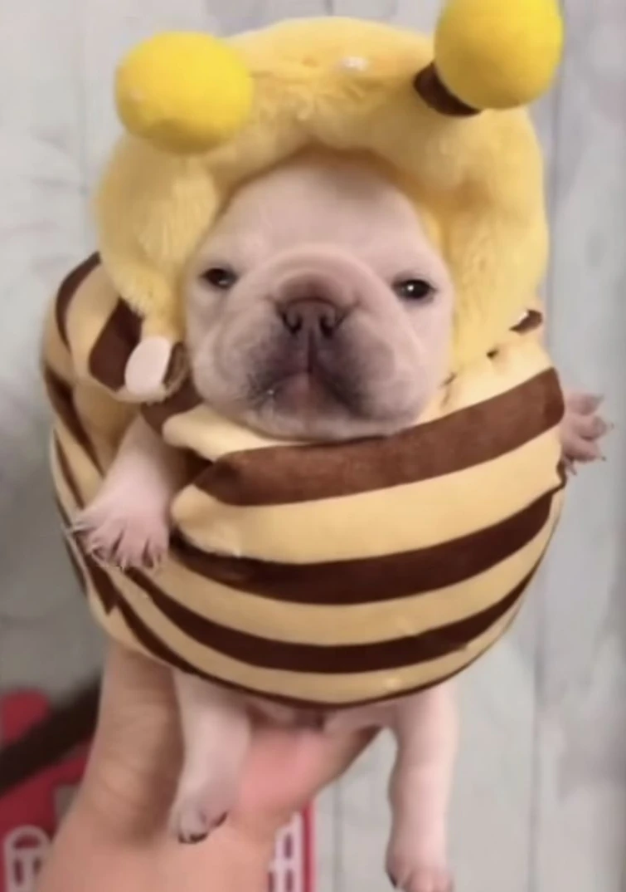
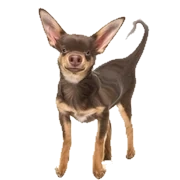
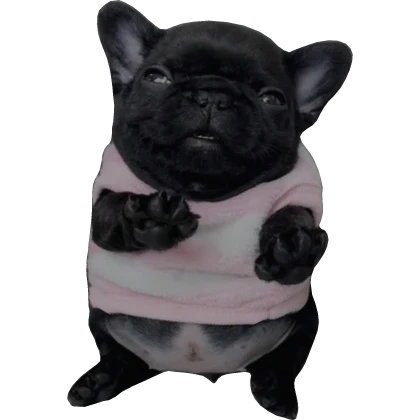

The Faithful Among Us
The canonical variants of the Pibble, the allied species of the Verse, and the entities adjacent to our worldwide fellowship.
A Living Taxonomy
A Fellowship of Many Coats
The Pibbleology recognizes a taxonomy of practitioners — Pibble variants distinguished by lineage and coat, alongside a parallel cast of allied (and occasionally adversarial) species who share the Verse.
Some entries below carry the gold seal of Canonical status, formally affirmed by the Lorewriters. Others are recognized in fanon, expanded through community practice, or remain partial stubs awaiting fuller revelation.
Canonical Lineage
Pibble Variants
The recognized coats of the Pibble. Each is honored equally; none is more washable than another.

Brown/tan French bulldog puppy.
Base Pibble
The Original Form · Brown / Tan
The unmarked default referent of the word Pibble. The
original brown or tan baby French bulldog fitting the archetypal
small, rotund, silly look. When practitioners speak of a
Pibble
without modifier, they speak of this form.
Base Pibbles serve as the reference point against which all other variants are recognized — Gmails, Washingtons, Bagels, and Pebbles alike.

A Gmail in repose.
Gmail
White · Often with Black Spots
Among the most recognizable variants in the fellowship. Gmails are white Pibbles, frequently bearing black spots, and are celebrated across short-form video as the aesthetic centerpiece of the faith.
Community consensus leans toward white with black spots as the working definition; pure-white Gmails are also recognized. Either form is considered peak Pibble.

A Washington, dignified.
Washington
Black · Usually Solid-Coated
The black counterpart to the Gmail. Washingtons are usually solid-colored rather than spotted, and are revered for their formal, dignified bearing.
The name has settled into the canon as the standard meme label for this colorway — parallel to how Gmail was adopted for the white form.

A Bagel, beaming.
Bagel
Golden Lineage · Baby Golden Retriever
Where Pibbles are rooted in the French bulldog, Bagels represent
a different lineage that nevertheless embodies the small, goofy,
affectionate aesthetic. They are widely described as
baby golden Pibbles.
The inclusion of Bagel demonstrates the open-armed posture of the faith — that the Pibble spirit transcends breed.
A Pebble at full maturity.
Pebble
A Life Stage · The Pibble, Grown
Pebbles are the older, larger, more mature form of a Pibble. Where Pibbles are baby-like, Pebbles retain the round and silly essence while gaining size and gravitas.
Within the fellowship there is gentle debate as to whether Pebbles constitute a distinct species or a life-stage progression. The character known as Pebble Mug is the most-cited example.

An Oreo, also called Yoshi.
Oreo / Yoshi
Predominantly Black with White Spots
The inverse of the Gmail pattern. Where Gmails are white with black spots, Oreos (also called Yoshis) are predominantly black with white spots.
The dual name continues the affectionate brand-style naming tradition that gives us Gmail, Bagel, and PB Cup.
Across the Verse
Allied & Adjacent Species
The Pibble is not alone. The Verse is populated by cousins, allies, antagonists, and entities of uncertain provenance.

A Geeble from Geeblorg.
Geeble
Alien Cousin · Native of Geeblorg
Green, antennaed beings who resemble Pibbles but are alien in
origin, hailing from the world Geeblorg.
Described in the canon as baby Frenchies, or any small,
rotund, looking silly
— with extraterrestrial origin.
Geebles possess weak powers, can fly, and famously hover around skyscrapers asking humans for Pibble Treats. Refused gracefully, they simply fly away. They are also armed with laser guns, with which they defend against Chingles and Chis. Their blood is acidic; their skin unusually hard.

A Beeble, never stinging.
Beeble
Bee-Adjacent · Forever Gentle
Similar to Handheld Pibbles, Beebles enjoy being held by humans and are bee-adjacent in form. It is canonically affirmed that Beebles never sting humans, owing to the strength of their bond with us.
The Beeble entry awaits fuller revelation from the Lorewriters. Until then, the faithful regard them as gentle familiars.

A Handheld Pibble.
Handheld Pibble
Pocket-Scale · Made to be Carried
A sub-category of exceptionally small Pibbles designed to be carried about by humans. The Handheld serves as the reference point against which the friendly Beeble is compared.

A Chi.
Chis
Antagonistic · Treat Counterfeiters
Hostile entities targeted by Geebles, and the suspected manufacturers of the poisonous Chis Pibble Treats. Their presence introduces the only real shadow in an otherwise wholesome Verse.
The Anti-Stigma Campaign of the Church works actively to educate the faithful about the difference between authentic Pibble Treats and Chis counterfeits.

A Chingle.
Chingles
Hostile · Targets of Geeble Defense
Hostile entities blasted by Geebles using their characteristic laser guns. Chingles are paired with Chis in canon as creatures whose aggression triggers a Geeble defensive response.

An Email.
Emails
Geeble-Adjacent · Provenance Uncertain
Listed alongside Chis and Chingles as entities that interact with Geebles — often, alas, as targets. Emails occupy the same partially-revealed tier as Beebles and Handheld Pibbles, awaiting further canonical illumination.